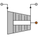
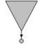

| Symbol | Name | Description |
| Ambient [+] | Liquid discharge to the atmosphere | |
| CombCha [+] | Combustion chamber | |
|  | Compressor [+] | Compressor |
| ControlPanel [+] | Calculations with the measurements done by other components | |
| CoolingJacket [+] | Cooling jacket | |
| FlowMeter [+] | Mass flow meter | |
| GasGen [+] | Gas generator | |
| Gearbox [+] | Mechanical shaft with a gearbox and without acceleration | |
| Injector [+] | Injector | |
|  | Inlet [+] | Conditions of a fluid inlet in the system |
| Junction [+] | Junction with pressure drop | |
| Nozzle [+] | Convergent nozzle with the ambient already connected | |
| NozzleConDiv [+] | Choked Convergent-divergent nozzle | |
| NozzleExt [+] | Nozzle extension | |
| Pipe [+] | Liquid pipe with pressure drop | |
| Pump [+] | Pump | |
| Regulator [+] | Pressure regulator | |
| Shaft [+] | Mechanical shaft without acceleration | |
| SplitFrac [+] | Flow splitter with pressure drop | |
| Tank [+] | Liquid tank | |
| TankOpen [+] | Liquid tank that is pressurised by the atmosphere | |
| ThrustMonitor [+] | Monitor to measure the thrust | |
| Turbine [+] | Turbine (the inlet may be choked or not) | |
| Turbine_ch [+] | Turbine with a choked inlet | |
| Turbine_liq [+] | Liquid turbine |
Document generated automatically (Date: 2020:10:21, Time: 12:26:47)